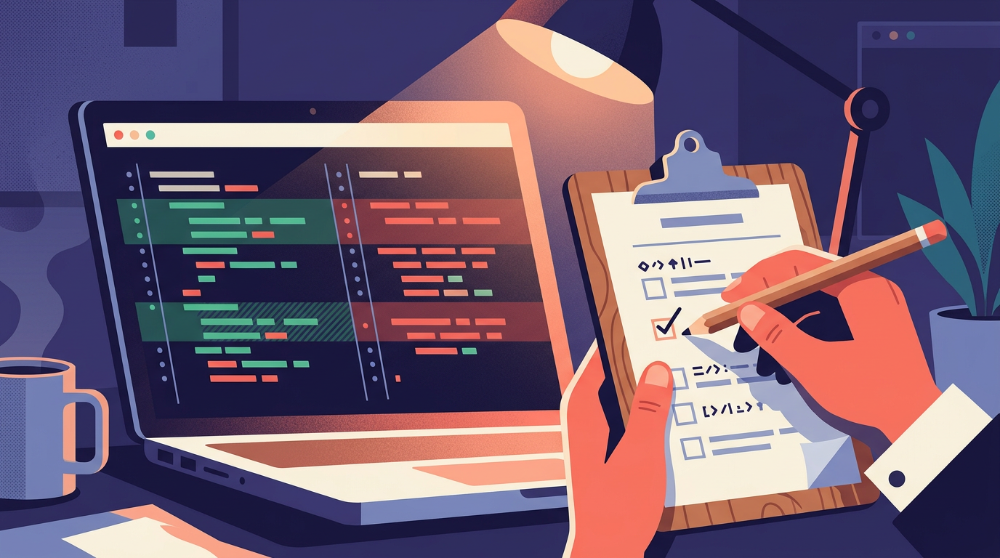

Semana passada eu me peguei revisando um diff de duzentas linhas gerado por um agente em menos de dois minutos — e ainda assim demorei mais pra revisar do que ele demorou pra escrever. Foi nesse momento que percebi: o problema nunca mais vai ser gerar codigo. O problema e confiar no que foi gerado, sustentar isso a longo prazo e revisar tudo em uma velocidade que nenhum time humano tava desenhado pra aguentar.
Se voce trabalha com desenvolvimento em 2026, sabe do que eu falo. Os agentes escrevem rapido, escrevem bastante, e escrevem coisa que parece boa numa primeira olhada. O gargalo migrou. Antes era "quem vai escrever essa funcionalidade". Agora e "quem vai garantir que essa funcionalidade nao vai explodir em produção" e "quem vai entender esse codigo dentro de seis meses". Escrever deixou de ser o desafio. Decidir o que pedir pro agente e revisar o que ele te devolveu — isso sim e o trabalho de verdade agora.
O numero que deveria incomodar todo lider tecnico
Tem um estudo de 2026 que eu fico repetindo pra qualquer colega que quer ouvir: apenas cerca de 27% do codigo gerado por IA chega de fato a producao. O resto fica pelo caminho — descartado, reescrito, ou simplesmente nunca aprovado. Isso nao e culpa do agente. E sintoma de que a etapa de revisao e sustentacao nao acompanhou o salto na geracao. Ao mesmo tempo, outros levantamentos mostram que a geracao de codigo com IA aumenta a saida das equipes em algo entre 25% e 35%. Faca as contas: mais codigo entrando, revisao no mesmo ritmo de antes, e o funil fica entupido. Nao e um problema de ferramenta. E um problema de processo que ainda nao mudou.

Eu já vi gente tentando resolver isso "revisando mais rápido", passando o olho por cima do diff e confiando no verde do teste automatizado. Isso não é revisão, é aposta. E aposta em escala, com múltiplos agentes gerando código o dia inteiro, é receita pra incidente. A resposta não é revisar menos com atenção — é revisar diferente, com estrutura pensada pra esse volume.
Passo 1: contexto antes de qualquer coisa
Se o seu time ainda trata cada solicitação pro agente como uma pergunta solta no vazio, o problema começa ali, muito antes da revisão. Um agente sem contexto do seu domínio, das convenções do repositório e dos padrões que você já validou vai te devolver código que talvez funcione, mas que não se parece com nada que o resto do time escreveria. E aí toda revisão vira uma negociação de estilo em vez de uma checagem de lógica.
O que funciona pra mim: documentar as regras do jeito que eu documentaria pra um estagiário bom, só que de forma que o agente consiga ler antes de agir. Exemplos reais de código aprovado, convenções de nomenclatura, decisões de arquitetura que já foram tomadas e não devem ser reabertas a cada solicitação. Quanto mais esse contexto está explícito, menos a revisão precisa corrigir escolhas óbvias — e mais ela pode focar no que realmente importa: a lógica de negócio, os efeitos colaterais, as bordas do problema.
Passo 2: commits pequenos são o seu ponto de restauração
Addy Osmani tem uma recomendação que eu adotei sem pensar duas vezes: trate cada commit pequeno e frequente como um ponto de restauração. Um "save point". Porque quando o agente erra — e ele vai errar, isso é certo — você quer poder voltar duas linhas de histórico, não desfazer três horas de trabalho emaranhado num commit gigante que mistura seis decisões diferentes.
Isso muda completamente a dinâmica da revisão. Um commit pequeno é revisável em minutos, com clareza sobre o que ele faz e por que. Um commit gigante gerado de uma vez por um agente ambicioso é um pesadelo: você não sabe se o problema está na primeira linha ou na centésima, e reverter significa perder tudo, inclusive as partes boas. Comitar pouco e sempre não é burocracia, é a diferença entre um erro de agente custar cinco minutos ou custar a tarde inteira.
Passo 3: revisão em escala não é revisão igual pra tudo
Aqui está o erro mais comum que eu vejo: tratar cada diff da mesma forma, independente do tamanho ou do risco. Isso não escala. Se você tenta dar a mesma atenção artesanal pra uma mudança de duas linhas e pra uma refatoração de quinhentas, ou você vai devagar demais nas coisas simples, ou rápido demais nas coisas críticas.
O que tem funcionado no meu time é um checklist objetivo — coisas que não dependem de julgamento subjetivo, tipo cobertura de teste, convenções de nomenclatura, ausência de segredos hardcoded, tratamento de erro. Isso pode e deve ser verificado por um segundo agente, funcionando como um segundo par de olhos antes que chegue em mim. Ele pega o óbvio, o mecânico, o que é fácil de esquecer quando você está cansado numa sexta-feira à tarde.
Mas a decisão final continua sendo humana. Sempre. O agente revisor sinaliza, aponta, sugere — quem decide se aquilo entra em produção é uma pessoa que entende o negócio, os riscos e o contexto que nenhum agente tem acesso completo. E aqui vale calibrar o esforço pelo risco real: diff pequeno e isolado, revisão rápida e objetiva; diff grande, que toca autenticação, dados sensíveis ou fluxo de pagamento, aí sim você para, respira e revisa com o cuidado que a situação exige. Tratar tudo com a mesma régua é desperdiçar atenção onde ela não faz diferença e economizar onde ela é essencial.
Passo 4: fechando o ciclo de aprendizado
A parte que mais gente esquece é alimentar de volta o que a revisão descobriu. Se o agente comete o mesmo tipo de erro repetidamente — esquece de tratar um caso de borda, ignora um padrão de nomenclatura, gera uma dependência que o time já decidiu evitar — isso precisa virar uma instrução explícita pra próxima solicitação, não uma correção manual recorrente que ninguém documenta.
Eu comecei a manter uma lista curta e viva de "lições de revisão": cada vez que eu corrijo algo que se repete, aquilo entra no contexto que o agente recebe da próxima vez. Parece trabalho extra, mas é investimento que se paga rápido. E dá pra medir: quantos comentários de revisão por diff estão caindo com o tempo, quantos commits precisam de reversão, quanto tempo cada revisão está levando. Se essas métricas não estão melhorando depois de algumas semanas de ajuste no contexto, alguma coisa no seu processo ainda está desalinhada — e vale mais investigar isso do que simplesmente aceitar que revisão vai ser sempre lenta.
O que eu levo dessa mudança toda
Gerar código nunca foi o trabalho difícil de verdade — só parecia, porque era a parte mais visível e mais cansativa manualmente. O trabalho difícil sempre foi decidir o que construir, entender as consequências e garantir que aquilo vai se sustentar depois que todo mundo esquecer os detalhes. Os agentes não mudaram isso. Eles só removeram a cortina que escondia essa verdade, e agora sobra tempo — e responsabilidade — pra fazer bem a parte que sempre importou mais.
Se o seu time ainda revisa código gerado por agente do mesmo jeito que revisava código escrito à mão há três anos, é aí que está o gargalo. Não é a IA que está lenta. É o processo de confiança que não acompanhou o salto de velocidade. Ajusta o contexto, protege seus pontos de restauração, calibra o esforço de revisão pelo risco real e fecha o ciclo de aprendizado. O resto tende a se resolver sozinho, ou pelo menos a doer muito menos.